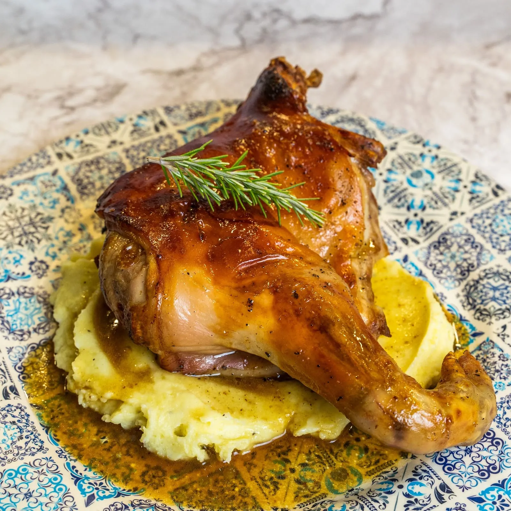

⏲ 35 minuts 👥 6/8 racions

Entrem de ple en les festes nadalenques i nosaltres us continuem fent propostes per posar-vos als
fogons de les vostres llars i cuinar per famílies, amics i éssers estimats en general, i ara us
explicarem
com podeu fer aquest garrí al forn. És tracta d’un clàssic a moltes llars, però que en molts indrets
queda eclipsat pel pollastre,
el gall o l’ànec al forn. Amb aquesta recepta potenciareu el seu gust ajudats per la ratafia i
quedareu com uns reis. L’acompanyem amb un puré de patata, però hi podeu fer la guarnició que més
us agradi.
Ingredients:
- 1 garrinet tallat a peces
- 400g de mantega
- 600g de patates
- Nata per cuinar
- Ratafia
- Sal, pebre i romaní
- Desfem 400 g de mantega i l’aromatitzem amb el que vulguem: nosaltres hi hem posat romaní, all i pebre negre.
- Posem el garrinet tallat a peces en una reixa sobre una safata de forn, el salpebrem i l’untem ben untat amb tota la mantega desfeta. És important tenir humitat al forn: si no tenim un forn amb vapor, podem posar una safata a la base amb aigua.
- Coem el garrinet al forn preescalfat a 180 durant unes dues hores o fins que estigui ben cuit, donant la volta cada mitja hora. L’acabarem torrant per la banda de la pella, amb un cop de forn i el gratinador, perquè quedi cruixent.
- Mentrestant preparem la base de patata, bullint partint d’aigua freda 600 g de patates i les triturem a mà amb uns dauets de mantega i una mica de nata de cuina, sal i pebre, tot al gust.
- Quan el garrinet sigui cuit, aprofitem els sucs que hagi deixat a la safata. Hi afegim un raig de ratafia i deixem reduir fins a la textura de salsa, desgreixant constantment.
- Emplatem amb una base de la patata, un tros del garrinet i salsant per sobre.